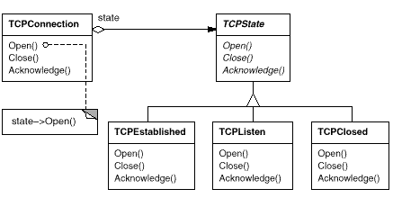
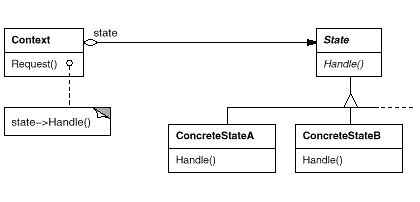
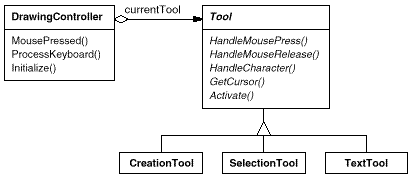

class TCPOctetStream;
class TCPState;
class TCPConnection {
public:
TCPConnection();
void ActiveOpen();
void PassiveOpen();
void Close();
void Send();
void Acknowledge();
void Synchronize();
void ProcessOctet(TCPOctetStream*);
private:
friend class TCPState;
void ChangeState(TCPState*);
private:
TCPState* _state;
};
class TCPState {
public:
virtual void Transmit(TCPConnection*, TCPOctetStream*);
virtual void ActiveOpen(TCPConnection*);
virtual void PassiveOpen(TCPConnection*);
virtual void Close(TCPConnection*);
virtual void Synchronize(TCPConnection*);
virtual void Acknowledge(TCPConnection*);
virtual void Send(TCPConnection*);
protected:
void ChangeState(TCPConnection*, TCPState*);
};
TCPConnection::TCPConnection () {
_state = TCPClosed::Instance();
}
void TCPConnection::ChangeState (TCPState* s) {
_state = s;
}
void TCPConnection::ActiveOpen () {
_state->ActiveOpen(this);
}
void TCPConnection::PassiveOpen () {
_state->PassiveOpen(this);
}
void TCPConnection::Close () {
_state->Close(this);
}
void TCPConnection::Acknowledge () {
_state->Acknowledge(this);
}
void TCPConnection::Synchronize () {
_state->Synchronize(this);
}
void TCPState::Transmit (TCPConnection*, TCPOctetStream*) { }
void TCPState::ActiveOpen (TCPConnection*) { }
void TCPState::PassiveOpen (TCPConnection*) { }
void TCPState::Close (TCPConnection*) { }
void TCPState::Synchronize (TCPConnection*) { }
void TCPState::ChangeState (TCPConnection* t, TCPState* s) {
t->ChangeState(s);
}
class TCPEstablished : public TCPState {
public:
static TCPState* Instance();
virtual void Transmit(TCPConnection*, TCPOctetStream*);
virtual void Close(TCPConnection*);
};
class TCPListen : public TCPState {
public:
static TCPState* Instance();
virtual void Send(TCPConnection*);
// ...
};
class TCPClosed : public TCPState {
public:
static TCPState* Instance();
virtual void ActiveOpen(TCPConnection*);
virtual void PassiveOpen(TCPConnection*);
// ...
};
void TCPClosed::ActiveOpen (TCPConnection* t) {
// send SYN, receive SYN, ACK, etc.
ChangeState(t, TCPEstablished::Instance());
}
void TCPClosed::PassiveOpen (TCPConnection* t) {
ChangeState(t, TCPListen::Instance());
}
void TCPEstablished::Close (TCPConnection* t) {
// send FIN, receive ACK of FIN
ChangeState(t, TCPListen::Instance());
}
void TCPEstablished::Transmit (
TCPConnection* t, TCPOctetStream* o
) {
t->ProcessOctet(o);
}
void TCPListen::Send (TCPConnection* t) {
// send SYN, receive SYN, ACK, etc.
ChangeState(t, TCPEstablished::Instance());
}

